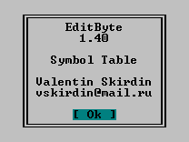

Валентин Скирдин
![[vskirdin@mail.ru]](../../images/email.gif) vskirdin@mail.ru
vskirdin@mail.ru
Игорь Русских
ruiv@uic.nnov.ru
Валентин Скирдин
vskirdin@mail.ru
Игорь Русских
ruiv@uic.nnov.ru
Что такое «нестандартные» диалоги можно увидеть на примере плагинов "Active Symbol Table" или "Calculator". Их нестандартность заключается в том, что эти плагины не используют Dialog API от FAR...
...А почему? А потому, что стандартному Dialog API не хватает "интерактивности", а именно нормального обработчика диалогов. Тот "куцый" интерфейс, который предоставляет Dialog API, не позволяет сделать нормальный интерактивный диалог. Выхода здесь два:
Первое - просить Евгения Рошала переписать Dialog
API с поддержкой пользовательской
функции-обработчика диалога.
Второе - "извращаться", путем создания
своего оконного интерфейса...
Но не о том здесь речь. Все бы хорошо, да вот только нету в Plugins API еще одной детали - API для вызова Help. Но выход есть, и весьма оригинальный: диалог About на основе стандартного Dialog API (уж этот умеет правильно реагировать на клавишу F1), например такого:

В пример, приведенном ниже, показано как вызвать подсказку из плагина, работающего в редакторе.
HANDLE WINAPI _export OpenPlugin(int OpenFrom,int Item)
{
INPUT_RECORD rec;
BOOL done=FALSE;
...
while (!done)
{
Info.EditorControl(ECTL_READINPUT,&rec);
...
if (rec.Event.KeyEvent.wVirtualKeyCode == VK_F1 &&
rec.Event.KeyEvent.bKeyDown)
{
// засылаем F1 в очередь...
WriteConsoleInput(GetStdHandle(STD_INPUT_HANDLE),
&rec,1,&lpNumberOfEventsWritten);
// ... и выводим диалог
Info.Dialog(Info.ModuleNumber,-1,-1,26,13,
"Navigate",DialogItems,numItems);
}
...
}
...
}
Все проще пареной репы - во входную очередь подло подсовывается сообщение как бы о нажатии клавиши F1, и затем с чистой совестью создается стандартный диалог. Он естественно пытается читать входную очередь и находит там заблаговременно подсунутое нами событие. Остальное дело техники и Far-а.
Единственный недостаток этого метода в том, что то самое маленькое диалоговое окошко так и остается висеть, пока пользователь его не закроет.
В большинстве случаев это неважно - но иногда в плагинах, где надо довольно часто ползать в хелп за подсказкой (навроде того же калькулятора) это достает. Вообще, здесь присутствует довольно тонкий психологический момент - пользователю быстро это надоедает.
К слову сказать, автору плагина HexEditor Алексею Пахотину удалось довольно просто разрешить этот конфликт - я (Игорь) в порыве хакерства как-то не обратил на этот момент внимания. Человеку будет не влом закрывать этот диалог, если он сам его открыл, и сам вызвал из него хелп. Таким образом в его HexEditor-е просто-напросто выводится довольно большой диалог с копирайтами (а как же - мы все гордые:)), в котором пользователю предлагается при желании нажать еще и F1. А потом? А сам нажал - сам и убирай. В этом случае вам не надо знать архитектуру консолей виндов, а тем более каких-то там странных функций по записи сообщений, которых никогда и не было.
Будьте проще.
Вот здесь подобных "извращений" делать не нужно. Все уже сделано - сервисная функция ShowHelp. Приведенный выше кусок теперь будет выглядеть так:
HANDLE WINAPI _export OpenPlugin(int OpenFrom,int Item)
{
INPUT_RECORD rec;
BOOL done=FALSE;
...
while (!done)
{
Info.EditorControl(ECTL_READINPUT,&rec);
...
if (rec.Event.KeyEvent.wVirtualKeyCode == VK_F1 &&
rec.Event.KeyEvent.bKeyDown)
{
// вызываем нужный хелп...
Info.ShowHelp(Info.ModuleName,"Navigate",0);
}
...
}
...
}
Почувствуйте разницу (естественно About-диалог не создаем)...
Вот теперь действительно - Будьте проще.
14.10.1999
Rev. 21.07.2000